Pausette
Brukerstøtte
Ta kontakt
Send e-post til khangazun@gmail.com. Lenken åpner en melding med en kort mal. Knappen Send e-post til utvikleren under Innstillinger ▸ Om fyller inn macOS-versjonen din og pauseinnstillingene dine for deg.
Vanlige spørsmål
En pause kom senere enn jeg ventet
Bare tiden du faktisk sitter ved Macen, teller. Å lese uten å røre noe i opptil et halvt minutt teller fortsatt; lenger enn det, og klokken venter. Og hvis du var borte like lenge som en pause varer, regner Pausette det som pausen og begynner på nytt.
Det kom ingen pause under samtalen min
Det er med vilje: Mens en app har en mikrofon åpen, venter en pause som skulle kommet, til samtalen er over, og tilbyr seg så. Du kan slå av dette under Innstillinger ▸ Atferd.
Hvordan kommer jeg ut av en pause?
Trykk på Esc, eller klikk på Hopp over pausen eller Ferdig. Ett minutt til gjør den lengre. Ingenting låser noen gang skjermen.
Kan pausen holde seg liten?
Ja. Slå av Demp skjermen under pausen under Innstillinger ▸ Atferd, så blir pausen et lite kort under menylinjen.
Er dette medisinske råd?
Nei. Pausette er en påminnelse. Hvis øynene, ryggen eller håndleddene plager deg, snakk med en lege eller en optiker.